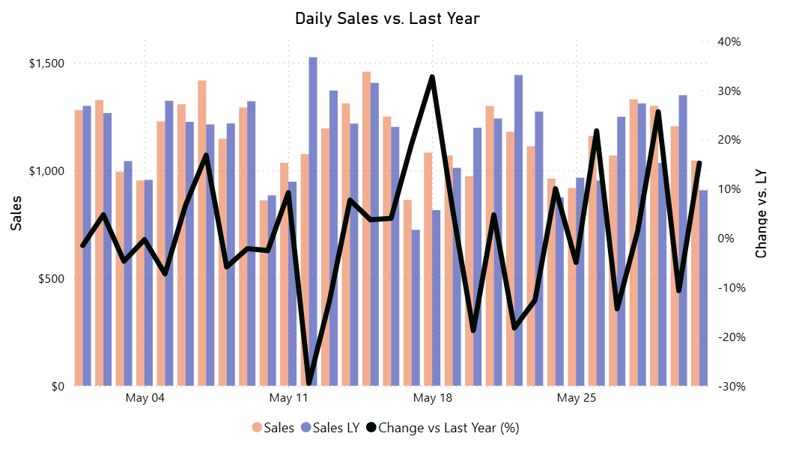

Sales vs. Last Year Same Weekday
Description
Shows daily sales compared to the same weekday one year ago (exactly 364 days prior), helping identify trends aligned by weekday behavior rather than calendar date.
Visual Example

DAX Formulas
SQL Examples
Usage Notes
- This approach shifts by exactly 364 days (52 weeks), preserving weekday alignment even across leap years.
- Ensure your Date table contains consecutive days, marked as a proper Date table in Power BI.
- Works best for retail or recurring-weekday comparisons — avoids comparing a weekday to a mismatched weekday across years.
- Leap-day behavior (Feb 29) will shift appropriately (e.g. to Mar 1 one year later).